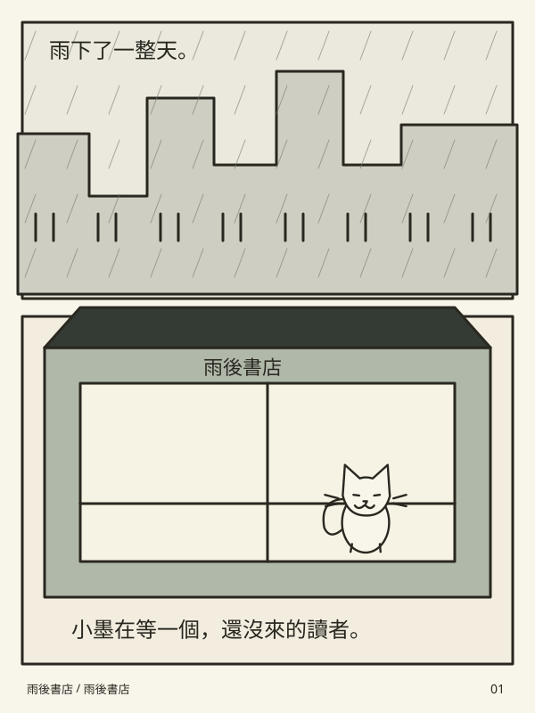

墨間原創 / VOL. 01

雨後書店六頁的小小冒險
YOUR READING CORNER
接著讀，從上次那一頁。
原創短篇《雨後書店》已放上書架。
有自己的漫畫檔案？JPG / PNG / WebP，檔案不離開裝置
THE WEEKLY EDIT
日本漫畫 · 銷售週榜10
正在載入已查核榜單…
本站可直接讀：原創短篇與你匯入的檔案。 週榜商業作品透過官方平台閱讀；外站可能有廣告、付費或地區限制。
沒有符合的作品。試試別的關鍵字，或取消收藏篩選。
你的書架，只屬於你。
閱讀進度與收藏儲存在這個瀏覽器；不註冊、不上傳。匯入檔案只在記憶體中使用，重新整理後需重新選取。